<div class="sidebar">
  <div class="container sidebar-sticky">
    <div class="sidebar-about">
      <div id="profile-pic"></div>
      <h2>{{ site.title }}</h2>
      <p class="lead">{{ site.description }}</p>
    </div>

    <ul class="sidebar-nav">
      <li class="sidebar-nav-item{% if page.title == " Home " %} active{% endif %}">
        <a href="/">Home</a>
      </li>

      {% comment %} The code below dynamically generates a sidebar nav of pages with `layout: page` in the front-matter. See readme for usage. {% endcomment %} {% assign pages_list = site.pages %} {% for node in pages_list %} {% if node.title != null %} {% if node.layout == "page" %}
      <li class="sidebar-nav-item{% if page.url == node.url %} active{% endif %}">
        <a href="{{ node.url }}">{{ node.title }}</a>
      </li>
      {% endif %} {% endif %} {% endfor %}
      <li>
        <a href="/resume#projects">Projects</a>
      </li>
    </ul>

    <ul class="sb-icons">
      <li>
        <a href="http://github.com/ismk">
          
        </a>
      </li>
      <li>
        <a href="http://linkedin.com/in/ismailkalimi">
          
        </a>
      </li>
      <li>
        <a href="mailto:ismail@kalimi.net">
          
        </a>
      </li>
    </ul>

    <h6 id="time">&copy; {{ site.time | date: '%Y' }}. All rights reserved.</h6>
  </div>
</div>
